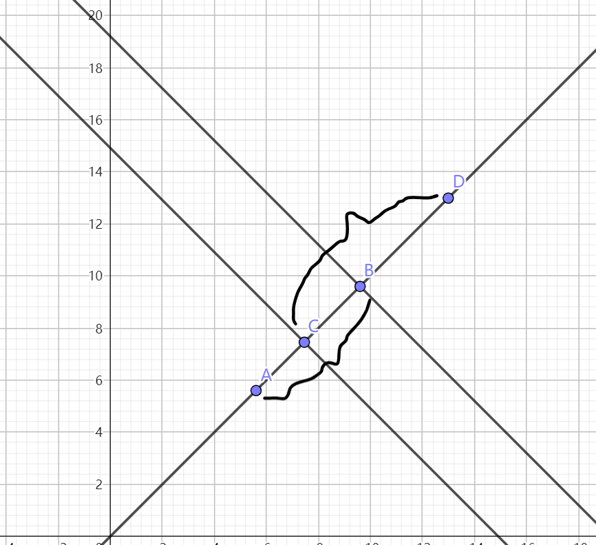

坐标计算线段长度方法
工业软件中的计算常用的是坐标法。因为布线的线段通常都是0°、90°、135°和45°，其中0°和90°比较容易计算，135°和45°的计算方法一致，这里以45°的线作为例子。

如图线段AB与线段CD有交集，需要计算交点的长度。
45°直线的方程表示为
$$
y = x + c
$$
也就是
$$
y-x = c
$$
把点带进去可以计算出C，来比较两个点是否在同一直线上，然而计算长度的方法在于经过对应的点作垂线。
垂线公式可以表示为
$$
y = -x +c
$$
利用y+x的值就能计算出C，把两个点带进去得到C1、C2，这个|C1-C2|就是两个直线的偏移量，是对应线段的斜边，所以利用|C1-C2|➗根号二就可以得到线段长度BC。